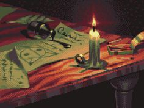

Mistérios da Mansão Esquecida

Você se entrega completamente ao culto, dedicando sua vida à busca do poder e da iluminação que a seita promete. No entanto, quanto mais você se aprofunda nos mistérios da mansão e nos ensinamentos da seita, mais você percebe que há um preço a pagar por sua devoção. A linha entre o bem e o mal se torna cada vez mais turva, e você se vê envolvido em um jogo perigoso de poder e intriga.